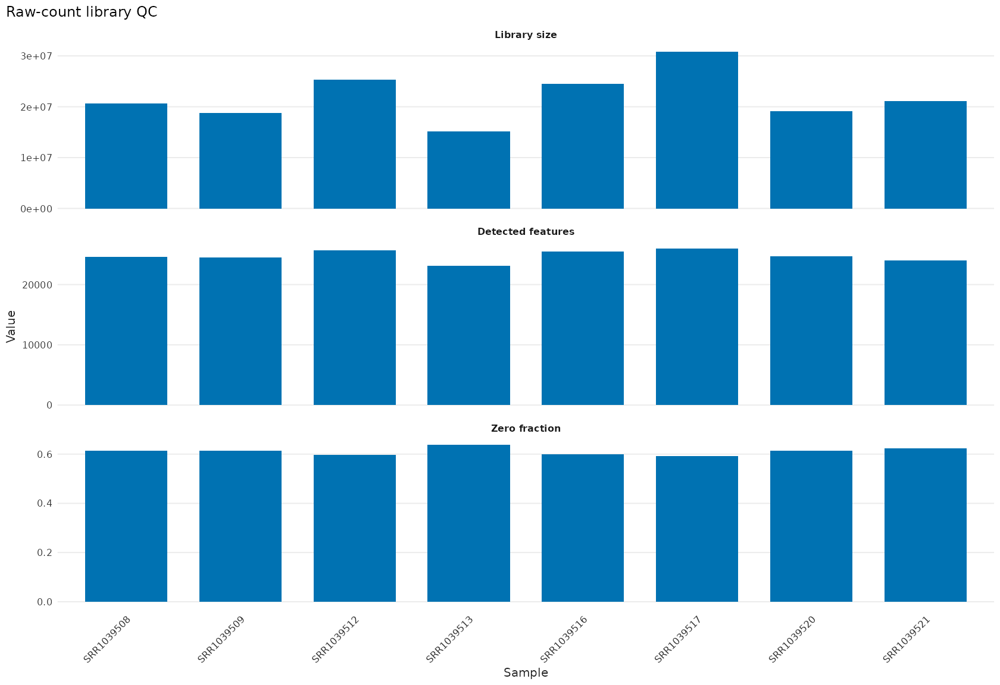
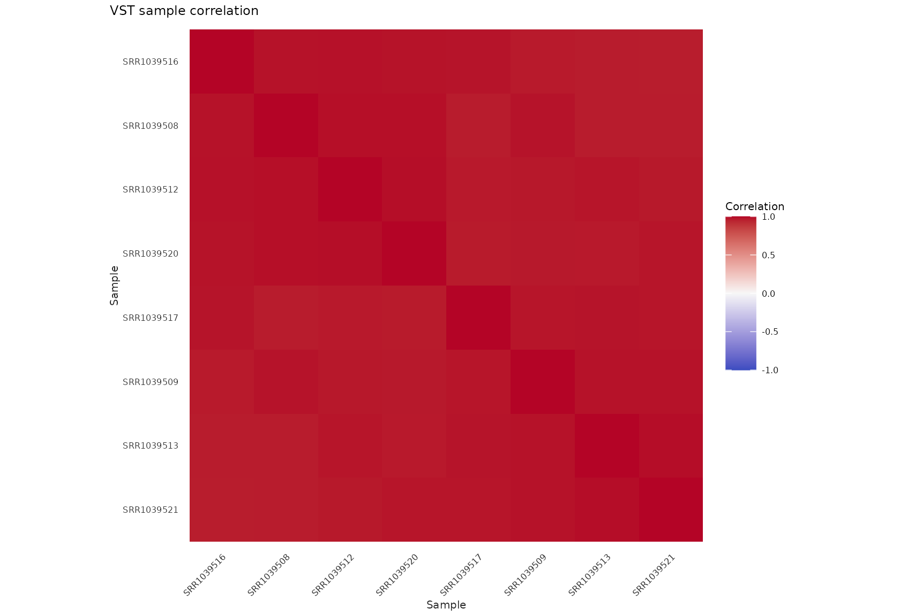
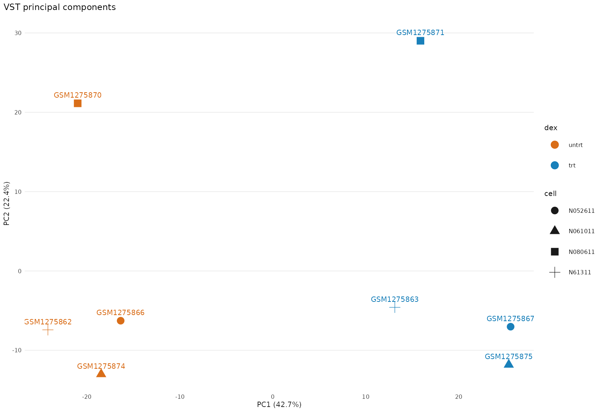
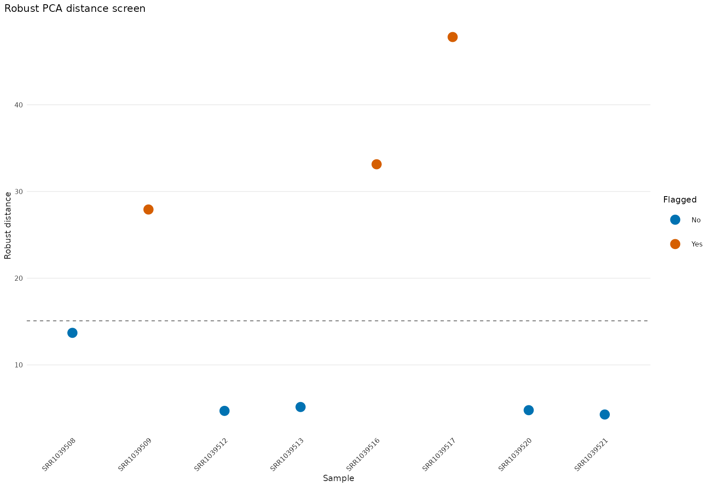
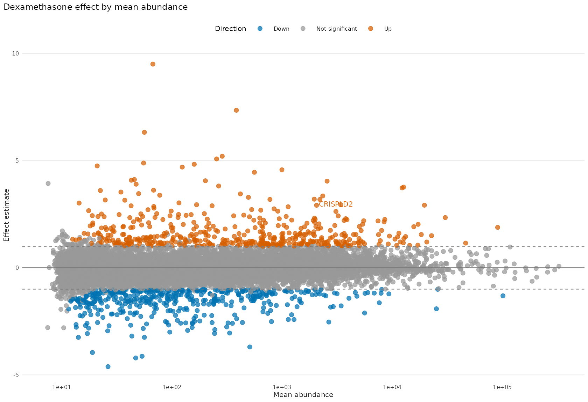
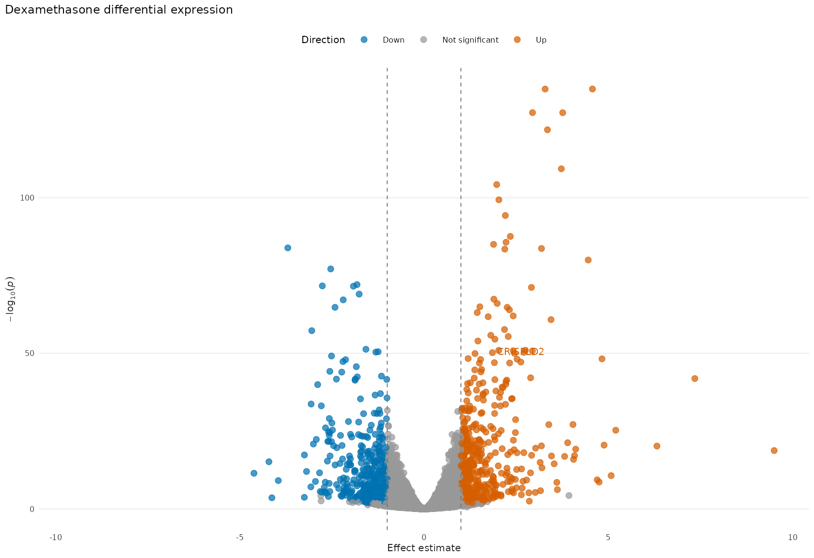
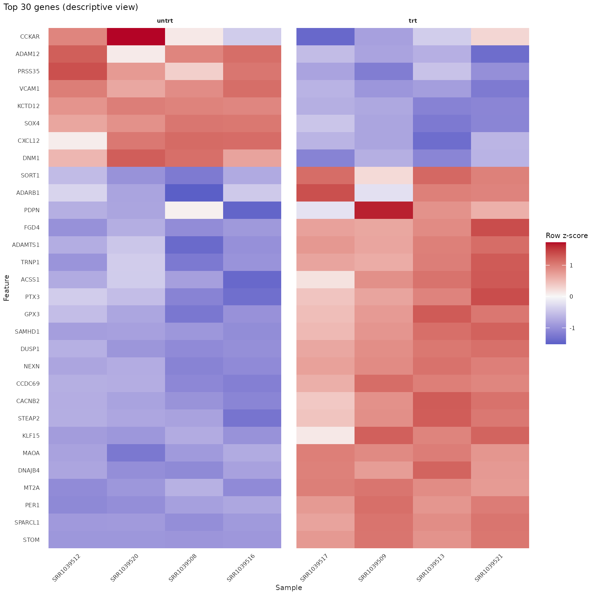

目标与数据
这篇教程用真实 RNA-seq
数据完成一条可复现的样本质控（QC）和差异表达流程。数据来自 Bioconductor
的 airway
ExperimentData
包；安装完成后，本文渲染不访问网络。若尚未安装教学依赖，可以先运行：
BiocManager::install(c("airway", "edgeR", "DESeq2"))
data("airway", package = "airway")
counts <- SummarizedExperiment::assay(airway, "counts")
#> Warning: replacing previous import 'S4Arrays::makeNindexFromArrayViewport' by
#> 'DelayedArray::makeNindexFromArrayViewport' when loading 'SummarizedExperiment'
sample_data <- as.data.frame(
SummarizedExperiment::colData(airway),
optional = TRUE
)
feature_data <- as.data.frame(
SummarizedExperiment::rowData(airway),
optional = TRUE
)[, c("gene_id", "gene_name", "symbol", "gene_biotype"), drop = FALSE]
sample_data$dex <- factor(sample_data$dex, levels = c("untrt", "trt"))
sample_data$cell <- factor(sample_data$cell)
feature_data$display_label <- as.character(feature_data$symbol)
missing_label <- is.na(feature_data$display_label) |
!nzchar(feature_data$display_label)
feature_data$display_label[missing_label] <- feature_data$gene_id[missing_label]
feature_data$display_label <- make.unique(feature_data$display_label)
mae <- mae_from_matrix(
expression = counts,
samples = sample_data,
row_data = feature_data,
experiment = "airway",
assay = "counts"
)载入对象包含 63,677 个基因和 8 个样本。四个 cell line 各有一份
untreated 与一份 treated 样本，因而处理比较不是 8
个互相独立样本的简单两组比较。后面的模型使用
~ cell + dex：cell 吸收细胞系间的基线差异，
dex 估计在四对样本中一致的地塞米松效应。
knitr::kable(
with(sample_data, table(cell, dex)),
caption = "每个 cell line 的 untreated/treated 配对结构"
)| untrt | trt | |
|---|---|---|
| N052611 | 1 | 1 |
| N061011 | 1 | 1 |
| N080611 | 1 | 1 |
| N61311 | 1 | 1 |
原始计数的文库质控
qc_library()只计算透明的样本级汇总；绘图函数返回普通
ggplot，所以标题和局部样式仍用 + 添加。
library_metrics <- qc_library(mae, "airway", "counts")
plot_qc_library(library_metrics) +
labs(title = "Raw-count library QC")
图 1：原始计数的文库规模、检出基因数和零计数比例。
这些量适合发现测序深度或检出率明显不同的样本，但不能单独证明某个样本“错误”，也不能替代对实验记录的核查。
过滤与方差稳定化
低计数基因会增加多重检验负担，并可能让样本距离受大量近零值影响。这里按
dex 分组调用 edgeR filterByExpr()
的薄封装；筛选只定义后续分析的特征集合，不修改原始
mae。
keep <- filter_expr(mae, "airway", group = "dex")
mae_filtered <- mae_subset_features(mae, "airway", names(keep)[keep])过滤后保留 15,926 / 63,677 个基因（25.0%）。
方差稳定化用于相关性、PCA
和热图等探索性图形。blind = FALSE
让离散度趋势知道设计结构；它不替代原始计数上的差异模型。
vst <- transform_vst(
mae_filtered,
"airway",
blind = FALSE,
design = ~ cell + dex
)
mae_vst <- mae_add_assay(mae_filtered, "airway", vst, name = "vst")样本关系与离群信号
sample_correlation <- qc_correlation(mae_vst, "airway", "vst")
plot_qc_correlation(sample_correlation, cluster = TRUE) +
labs(title = "VST sample correlation")
图 2：VST 表达的样本 Pearson 相关性，按层次聚类重新排序。
pca <- reduce_pca(mae_vst, "airway", "vst")
plot_embedding(
pca,
sample_data = mae_samples(mae_vst, "airway"),
colour = "dex",
shape = "cell",
label = "SampleName"
) +
labs(title = "VST principal components")
图 3：VST 表达的前两个主成分；颜色表示处理，形状表示 cell line。
outlier_metrics <- qc_outliers(pca, components = 1:5, probability = 0.99)
plot_qc_outliers(outlier_metrics) +
labs(title = "Robust PCA distance screen")
图 4：基于前五个主成分的稳健距离及 99% 卡方筛查阈值。
稳健距离标记是需要回看原始记录、比对质量和其它 QC 指标的审查信号，不是自动删除样本的规则。本流程不会因为该图移除任何样本。
配对差异表达
DESeq2 模型沿用 ~ cell + dex，并显式提取
trt - untrt。这使比较方向不会依赖当前因子水平的偶然顺序。
fit <- de_deseq2(
mae_filtered,
"airway",
design = ~ cell + dex,
fitType = "parametric",
quiet = TRUE
)
de_result <- de_deseq2_results(
fit,
contrast = c("dex", "trt", "untrt"),
alpha = 0.05
)
de_results <- de_table(de_result)
fdr_threshold <- 0.05
effect_threshold <- 1
selected <- de_selected(
de_result,
fdr = fdr_threshold,
min_abs_effect = effect_threshold
)
up_count <- sum(selected & de_results$effect > 0)
down_count <- sum(selected & de_results$effect < 0)在 FDR ≤ 0.05 且绝对效应估计 ≥ 1 的联合阈值下，共有 925 个基因入选，其中 478 个上调、447 个下调。缺失 adjusted p-value 按“不显著”处理。
feature_lookup <- mae_feature_data(mae_filtered, "airway")
top_order <- order(de_results$adjusted_p_value, na.last = NA)
top_table <- de_results[top_order[seq_len(min(10L, length(top_order)))], , drop = FALSE]
top_table$symbol <- feature_lookup[top_table$feature_id, "symbol"]
top_table <- top_table[, c(
"feature_id", "symbol", "effect", "standard_error", "p_value",
"adjusted_p_value"
)]
knitr::kable(top_table, digits = 4, caption = "按 adjusted p-value 排序的前 10 个基因")| feature_id | symbol | effect | standard_error | p_value | adjusted_p_value | |
|---|---|---|---|---|---|---|
| ENSG00000152583 | ENSG00000152583 | SPARCL1 | 4.5696 | 0.1843 | 0 | 0 |
| ENSG00000165995 | ENSG00000165995 | CACNB2 | 3.2857 | 0.1325 | 0 | 0 |
| ENSG00000101347 | ENSG00000101347 | SAMHD1 | 3.7617 | 0.1563 | 0 | 0 |
| ENSG00000120129 | ENSG00000120129 | DUSP1 | 2.9425 | 0.1222 | 0 | 0 |
| ENSG00000189221 | ENSG00000189221 | MAOA | 3.3483 | 0.1422 | 0 | 0 |
| ENSG00000211445 | ENSG00000211445 | GPX3 | 3.7250 | 0.1671 | 0 | 0 |
| ENSG00000157214 | ENSG00000157214 | STEAP2 | 1.9714 | 0.0906 | 0 | 0 |
| ENSG00000162614 | ENSG00000162614 | NEXN | 2.0303 | 0.0956 | 0 | 0 |
| ENSG00000125148 | ENSG00000125148 | MT2A | 2.2056 | 0.1066 | 0 | 0 |
| ENSG00000154734 | ENSG00000154734 | ADAMTS1 | 2.3403 | 0.1175 | 0 | 0 |
MA、火山图与描述性热图
CRISPLD2（Ensembl
ENSG00000103196）由原研究预先指定为关注基因，而不是看完当前结果后再挑出的标签。
crispld2 <- "ENSG00000103196"
feature_labels <- stats::setNames(
feature_lookup$display_label,
rownames(feature_lookup)
)
feature_labels[crispld2] <- "CRISPLD2"
plot_de_ma(
de_result,
fdr = fdr_threshold,
min_abs_effect = effect_threshold,
label_features = crispld2,
feature_labels = feature_labels
) +
labs(title = "Dexamethasone effect by mean abundance")
图 5：DESeq2 平均丰度与处理效应的 MA 图；预先标注 CRISPLD2。
plot_de_volcano(
de_result,
fdr = fdr_threshold,
min_abs_effect = effect_threshold,
label_features = crispld2,
feature_labels = feature_labels
) +
labs(title = "Dexamethasone differential expression")
图 6：处理效应与原始 p-value 的火山图；颜色由 FDR 与效应阈值共同决定。
最后选择 adjusted p-value 最小的 30 个基因，并在 VST 尺度上按行标准化。这里必须显式传入 feature ID；绘图函数不会暗中选择“最显著”基因。
heatmap_features <- de_results$feature_id[top_order[seq_len(min(30L, length(top_order)))]]
plot_assay_heatmap(
mae_vst,
"airway",
"vst",
features = heatmap_features,
scale = "row",
cluster_rows = TRUE,
cluster_columns = TRUE,
column_split = "dex",
feature_label = "display_label"
) +
labs(title = "Top 30 genes (descriptive view)")
图 7：adjusted p-value 最小的 30 个基因的 VST 行标准化热图。
这张热图在用于拟合和排序的同一批数据上展示，因此只是描述性总结，不是独立验证。确认处理效应仍需要独立队列或有针对性的实验验证。
限制、来源与会话信息
本分析只有四个 cell line、每个条件各一次测量；cell
配对设计提高了比较效率，但不能估计更广泛人群中的所有变异，也不能证明因果机制。独立过滤、模型假设、基因注释版本和阈值选择都会影响报告结果。
数据来自 airway ExperimentData 包，对应 Himes 等人的研究：RNA-Seq Transcriptome Profiling Identifies CRISPLD2 as a Glucocorticoid Responsive Gene that Modulates Cytokine Function in Airway Smooth Muscle Cells（PLoS ONE, 2014；PMID 24926665；GEO GSE52778）。数据包说明见 Bioconductor airway 手册。
本文使用 bulkMAE 0.4.1。完整会话信息如下，便于记录 R、Bioconductor 和后端版本。
若要把 de_selected() 和 de_ranks()继续用于
ORA 或 GSEA，请阅读 富集分析教程。
sessionInfo()
#> R version 4.6.1 (2026-06-24)
#> Platform: x86_64-pc-linux-gnu
#> Running under: Ubuntu 24.04.5 LTS
#>
#> Matrix products: default
#> BLAS: /usr/lib/x86_64-linux-gnu/openblas-pthread/libblas.so.3
#> LAPACK: /usr/lib/x86_64-linux-gnu/openblas-pthread/libopenblasp-r0.3.26.so; LAPACK version 3.12.0
#>
#> locale:
#> [1] LC_CTYPE=C.UTF-8 LC_NUMERIC=C LC_TIME=C.UTF-8
#> [4] LC_COLLATE=C.UTF-8 LC_MONETARY=C.UTF-8 LC_MESSAGES=C.UTF-8
#> [7] LC_PAPER=C.UTF-8 LC_NAME=C LC_ADDRESS=C
#> [10] LC_TELEPHONE=C LC_MEASUREMENT=C.UTF-8 LC_IDENTIFICATION=C
#>
#> time zone: UTC
#> tzcode source: system (glibc)
#>
#> attached base packages:
#> [1] stats graphics grDevices utils datasets methods base
#>
#> other attached packages:
#> [1] ggplot2_4.0.3 bulkMAE_0.4.1
#>
#> loaded via a namespace (and not attached):
#> [1] sass_0.4.10 generics_0.1.4
#> [3] SparseArray_1.12.2 DESeq2_1.52.0
#> [5] lattice_0.22-9 digest_0.6.39
#> [7] magrittr_2.0.5 evaluate_1.0.5
#> [9] grid_4.6.1 RColorBrewer_1.1-3
#> [11] fastmap_1.2.0 jsonlite_2.0.0
#> [13] Matrix_1.7-5 limma_3.68.5
#> [15] scales_1.4.0 codetools_0.2-20
#> [17] textshaping_1.0.5 jquerylib_0.1.4
#> [19] abind_1.4-8 cli_3.6.6
#> [21] rlang_1.3.0 XVector_0.52.0
#> [23] Biobase_2.72.0 withr_3.0.3
#> [25] cachem_1.1.0 DelayedArray_0.38.2
#> [27] yaml_2.3.12 BiocBaseUtils_1.14.2
#> [29] otel_0.2.0 S4Arrays_1.12.0
#> [31] parallel_4.6.1 tools_4.6.1
#> [33] BiocParallel_1.46.0 dplyr_1.2.1
#> [35] locfit_1.5-9.12 SummarizedExperiment_1.42.0
#> [37] MultiAssayExperiment_1.38.0 BiocGenerics_0.58.1
#> [39] vctrs_0.7.3 R6_2.6.1
#> [41] matrixStats_1.5.0 stats4_4.6.1
#> [43] lifecycle_1.0.5 Seqinfo_1.2.0
#> [45] edgeR_4.10.5 S4Vectors_0.50.2
#> [47] fs_2.1.0 htmlwidgets_1.6.4
#> [49] IRanges_2.46.0 ragg_1.5.2
#> [51] pkgconfig_2.0.3 desc_1.4.3
#> [53] pkgdown_2.2.1 pillar_1.11.1
#> [55] bslib_0.12.0 gtable_0.3.6
#> [57] Rcpp_1.1.2 glue_1.8.1
#> [59] statmod_1.5.2 systemfonts_1.3.2
#> [61] xfun_0.60 tibble_3.3.1
#> [63] GenomicRanges_1.64.0 tidyselect_1.2.1
#> [65] MatrixGenerics_1.24.0 knitr_1.52
#> [67] farver_2.1.2 htmltools_0.5.9
#> [69] labeling_0.4.3 rmarkdown_2.32
#> [71] compiler_4.6.1 S7_0.2.2